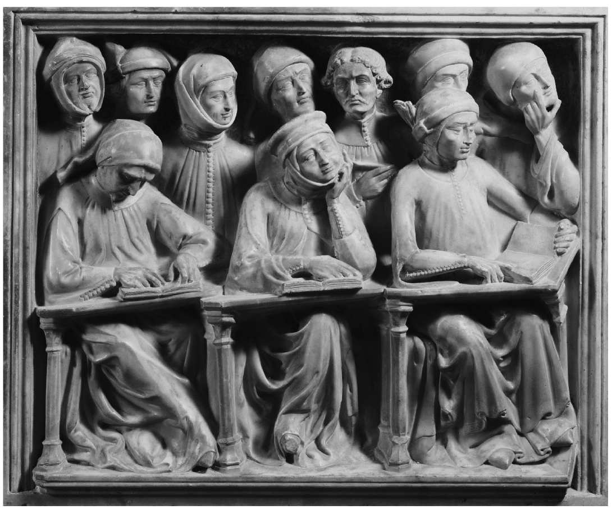
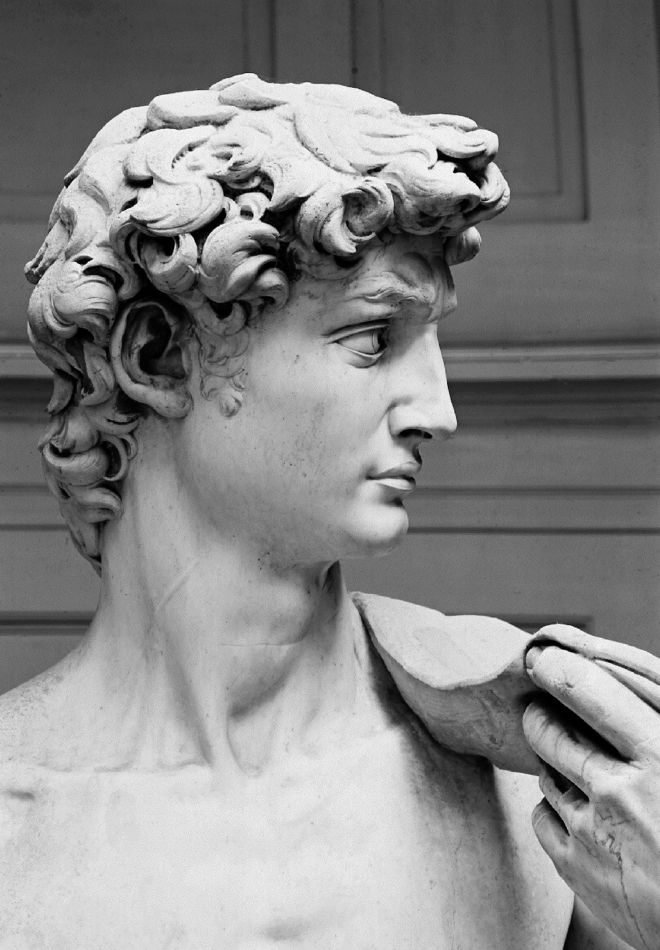

中世纪西方的文化和智能的发展，同其经济和政治的发展一样意义重大，富有革新精神。从罗马陷落到大约1000年间的几个世纪，在几乎不具备文化创造力的意义上说，构成了西方历史上的“黑暗时代”。极度贫穷、危机四伏、与世隔绝，不可能产生文学、艺术和学术杰作。的确，修道院的修士们设法保存了部分古典文化，但他们自然致力于保存与其宗教信仰相一致的部分，而忽视了那些更为世俗的东西。结果形成了“基督教的”即“教会的”文化，这种文化是对教会的一个补充，并依附于教会。
11世纪，主教们为了教育所辖教区内的教士，创办了教会学校。一个世纪以后，以教会学校为基础的早期大学逐渐形成。这些大学的一个与众不同的特征是，它们是具有合法身份的自治团体。此外，它们不像教会学校那样只有一个文科，而是另外还有教会法规、民法、医学和神学系。文科的全部课程包括三个低级学科（拉丁文法、逻辑和修辞）和四个高级学科（算术、几何、音乐和天文）。12世纪，在博洛尼亚、巴黎和牛津出现了第一批大学。随后一个世纪中，有人在帕多瓦、那不勒斯和萨拉曼卡创办了一些大学；14世纪，又有人在中欧的布拉格、克拉科夫和维也纳建立了一些大学。这些大学最初都是培养教士的机构。重视培养教士是很自然的，也是适合时宜的，因为当时教士垄断了文化职业和行政职位。
随着从大约1350年至1600年这一时期的文艺复兴运动的蓬勃发展，教育和学术环境起了变化。文艺复兴运动首先在意大利开始，并因此反映了当时意大利社会的状况和价值观。意大利是以蒸蒸日上的工业以及西欧、富裕的拜占庭和伊斯兰教帝国之间有利可图的贸易为基础的一个活跃的都市社会。庞大的商人家族不仅控制了贸易和各种制造业，而且还控制了政治事务；他们对诸如威尼斯、热那亚、佛罗伦萨、米兰和比萨之类的繁华城市起了决定性影响。正是这些商人家族成为文艺复兴时期艺术家和作家的资助者。尽管这些资助者中不仅有教皇如尼古拉斯五世、庇护二世、尤里乌斯二世和利奥十世，而且还有公爵家族如米兰的斯福尔扎，但是，商业家族的需要、私利和爱好却影响了文艺复兴时期的文化复兴；因此，产生了文艺复兴运动的现世主义和人道主义——文艺复兴运动关心的是今世而非来世，注重的是异教经典而非基督教神学。

图103 位于意大利北部的博洛尼亚大学作为复兴罗马法的中心而出名。这幅刻在博洛尼亚大学一位法学教授的坟墓上的雕刻品，表现的是学生们正在听他的一堂讲座。
文艺复兴时期的天才
极有天才的列奥纳多·达·芬奇是文艺复兴时期的一位杰出人物。他代表了他所处的时代，这不仅是因为他在如此众多的领域中取得了卓越成就，而且还因为他乐于突出显示自己的天才。30岁时，他给米兰公爵写了以下这封信；这封信给米兰公爵极深的印象，使后者雇用了他。*
1. 我为建桥制订了计划。桥要建得轻巧、稳固，以便于运输，这样就可以追逐敌人，时常打败他们；而有些桥则要设计得非常坚固，无法被烈火和进攻所破坏，同时还要便于我们撤退和部署兵力。我也制订了焚毁和破坏敌人桥梁的计划。
2. 当一个地方被围困时，我知道如何切断引自沟渠的水源；我还懂得如何建造大量的桥，如何制造盾牌、云梯和其他与军事相关的器械……
……
4. 我还打算制造大炮。这些大炮应该便于运输，能够发射冰雹般的小石子，它们落地产生的烟尘能给敌人造成极大的恐惧、损失和混乱。
5. 为到达某一个固定地点，尽管也许有必要在沟渠底下或河底下行进，但我还有办法通过洞穴和蜿蜒的秘道悄无声息地到达那里。
6. 我还能制造安全的、攻不破的装甲车。这些装甲车可以驶入备有大炮的敌人的密集行列中，而且，敌军的阵营再庞大，也抵挡不了这些装甲车。步兵可以安然无恙、不受抵抗地跟在装甲车后面前进……
……
9. 如果战斗发生在海上，我打算建造许多既适合进攻又适合防守的引擎，还打算建造一些能抵挡最猛烈炮火和烟雾的船只。
10. 在和平时期，我相信在建筑方面，在建造公私用房方面，在将水从一地输送到另一地方面，我可以像其他任何人一样令您完全满意……
如果有谁认为上述事物中有哪一样是不可能实现或不能实行的，我很乐意在您的公园里或阁下喜欢的任何地方进行试验。再次对阁下表示最真诚的敬意。
* J. P. 和I. A. Richter eds., The Literary Works of Leonardo da Vinci（Oxford University Press, 1939）, pp. 92，93.
文艺复兴运动的现世主义和个人主义也反映在学术成就和教育中。所谓文艺复兴时期的文学之父弗朗切斯科·彼得拉尔卡，即彼特拉克（1304—1374年），强调古典文学作为自我修养的手段和社会行动的指导所具有的价值。同样，文艺复兴时期成立的新寄宿学校，并不培训牧师，而是培养商人的子弟。学校课程注重的是古典作品研究和体育运动，其宗旨是要教育学生们快乐、健康地生活，成为有责任感的公民。
文艺复兴精神极为明显地体现在艺术方面。由于教会不再是各种艺术的唯一资助者，艺术家们便受到来自其他方面的鼓励，转向除传统的《圣经》中的题目以外的其他一些主题。虽然宗教题目通常依然出现，但是在诸如达·芬奇、米开朗琪罗、拉斐尔和提香之类大师的作品中，创作重点越来越转向旨在揭示灵魂内在奥秘的肖像画，转向旨在以醒目的色彩和形式来使人感到赏心悦目的绘画。
文艺复兴运动并不只局限于意大利，16世纪时，它还将种种新事物传播到了北欧。促成这一传播的因素有两个：一个因素是受雇于北方诸君主的意大利外交官和将领，另一因素是加快了图书的发行和思想的交流的印刷机。由于识字现象在北欧比在欧洲的南部和东部地区更普遍，因而印刷业在北欧尤其有影响。大批的印刷品激起了公众对政治和宗教问题的极大热情，从而大大地促成了宗教改革及随后的宗教和王朝战争。
最后，从世界历史的角度看，文艺复兴的意义何在？显然，对人类、对人类所能做到的事情的新的强调，比起先前中世纪的观点，更有助于海外扩张。事实依然是，在西欧出现了思想的蓬勃发展，这种发展在欧亚其余地区是不存在的。这是极其重要的一个根本差别。
在中国，儒学继续对社会起决定性影响。它尊老鄙少、厚古薄今，注重既成权力，忽略改革创新，因而成为在各方面保持现状的最佳工具。这种因循守旧、坚持正统观念的气氛阻碍了思想的继续发展，有助于解释为何中国在技术上落后于西方，尽管中国在发明造纸术、印刷术、火药和指南针方面取得了最初的辉煌成就。在这些早期发明之后，中国并没有制订出一套科学原理。

图104 大卫像。年仅26岁的艺术家米开朗琪罗于1501年开始雕刻的大卫像成为佛罗伦萨共和国的象征，并被陈列在佛罗伦萨美术学院。这里展现的细部，突出了雕像赖以成名的压抑的情感和尊严。
在欧亚大陆的其他地区，情况基本相同。例如，在奥斯曼帝国，穆斯林学院注重神学、法学和修辞学，但轻视天文学、数学和医学。从这些学院毕业的学生对西方正在做的事情一无所知，也没有兴趣去弄清楚。穆斯林土耳其人都不相信基督教异教徒能传授任何有价值的东西。不时会冒出一位出类拔萃的、有远见卓识的人警告说，这道思想铁幕具有将奥斯曼帝国与附近基督教世界分隔开来的危险性。生活于17世纪上半叶的著名的土耳其目录学家、百科全书编纂者兼历史学家卡提比·舍勒比，就是发出这种警告的人之一。由于出身贫寒，他未能受到正规的高等教育。但是，这其实是塞翁失马。他用不着以浅薄的、吹毛求疵的态度专心于代表当时的奥斯曼教育的穆斯林神圣学业。他自学成才这一事实在很大程度上解释了他对西方学问不存先入之见的态度。
在舍勒比的著作中，有一本篇幅短小的海军手册，这本手册是他在1656年土耳其舰队于海上遭惨败后编写的。他在手册前言中强调了掌握地理学和地图测绘学的必要性：
对掌管国家事务的人来说，地理科学知识是必须掌握的。他们可以不知道整个地球是什么样的，但至少应该知道奥斯曼帝国和相邻国家的地图。这样，当他们必须派部队作战时，就可以在熟悉情况的基础上进行，从而使攻击敌区、保护和守卫边境地区成为一件更为容易的事。同那些不懂地理科学的人商量是得不到令人满意的结果的，即便他们是当地的老兵，情况也是如此。这样的老兵大多完全不能粗略地绘出自己家乡地区的地图。
能充分地、令人信服地证明学习这门科学的必要性的是这样一个事实：异教徒通过应用和尊重学问中的那些分科，发现了新大陆并侵占了印度的一些市场。[3]
舍勒比看到了欧洲的知识进步与海外扩张之间的联系。在舍勒比1657年去世前写的最后一部著作中，他警告自己的同胞，如果不放弃教条主义，他们很快就会“用张得像牛眼一样大的眼睛来看这个世界”。他的预言被证明是有预言性的。土耳其人仍然沉浸在他们的宗教蒙昧主义中，所以同其他非西方民族一样，付出了高昂的代价。而基督教异教徒则凭借他们的新知识，最终不仅成为新大陆的主人，而且成为古老的伊斯兰教帝国和儒教帝国的主人。